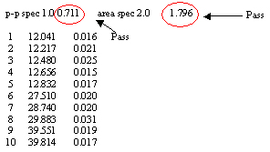
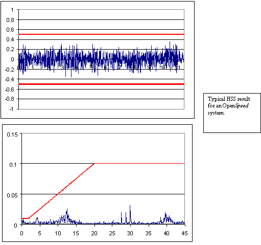
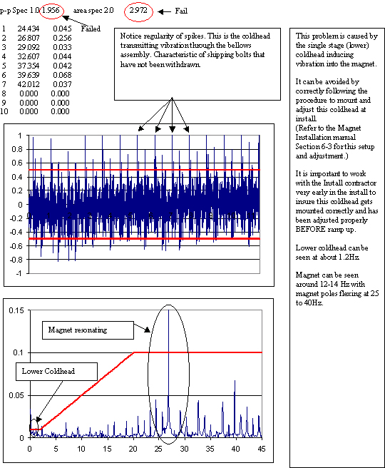
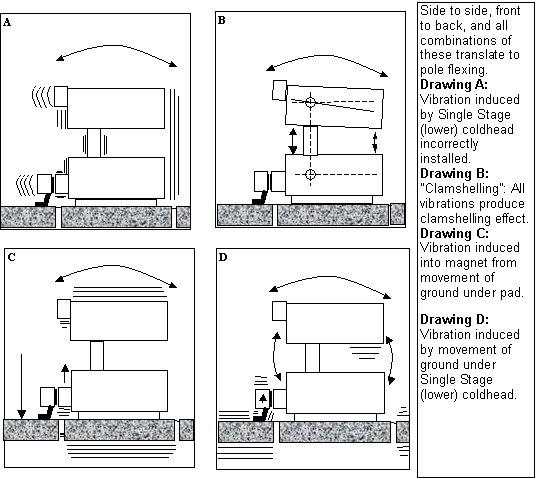

Openspeed HSS Troubleshooting
The troubleshooting information for OpenSpeed has been kept in this standard Signa HSS procedure for a short time at the request of the field (it will be removed in a future update). Refer to OpenSpeed High Speed Stability (HSS) for the complete OpenSpeed procedure.
Running HSS on the 0.7T system at installation will be extremely useful in reducing installation and warranty costs as well as troubleshooting time for vibration (image ghosting). Problems with site vibration can be identified and corrected.
The OpenSpeed magnet is a new class of magnet. What you may know about the cylindrical magnets may not always apply. Procedures are strikingly similar in all cases. They are not EXACTLY the same, however. Read all procedures carefully before proceeding to troubleshooting or calibrating the OpenSpeed system. The OpenSpeed magnet design is highly susceptible to vibration. The placement of the downposts and extremely small changes in distance between the pole faces can cause ghosting and general poor image quality.
It is recommended that you also refer to Service Note 67031 89109.pdfAnalyzing HSS (High Speed Stability) Results, and the High Field, High Speed Stability (HSS) procedures for troubleshooting 1.0T and 1.5T Signa sites.
1 HSS Required During Initial Installation of OpenSpeed System
As of April 1, 2001, High Speed Stability (HSS) must be performed on ALL OpenSpeed systems during the Install phase of the system. The recommended time to run this test is immediately after ECMT (Eddy Current Compensation). The result file should be sent to MR Service Engineering. Attach the file to an e-mail message and direct that e-mail to: mrservice2@med.ge.com.
-
The file should always be analyzed using Report Manager "on-site" as a functional check of the OpenSpeed system to benchmark the site stability related to environmental vibration and troubleshoot known vibration sources. You must also send your files to the e-mail address above for additional MR Engineering analysis and assistance.
-
During the few weeks directly following customer turnover, you may want to run HSS periodically, characterizing the systems operation related to its environment.
2 Using HSS as Part of Normal Troubleshooting of OpenSpeed
If vibration has suddenly become an issue, check the suite's environment for recent construction or addition of A/C, air handlers, elevators, changes in the traffic patterns of roads or parking areas near the magnet-anything that could cause the ground to shake. Take note of these, and plan your HSS data collection accordingly.
3 Typical Graphical Plots for OpenSpeed System
The following graphical plots are examples of passing and failing HSS data taken from OpenSpeed systems.
Do not turn over a site to a customer if the HSS procedure indicates the site is failing. Troubleshoot the system for vibration problems. Notify MR Service Engineering to aid in this process.
4 Interpreting HSS Graphs and Data Collected Using Report Manager.
HSS must pass any one of the following three specifications. If any of the other tests fail, an HSS failure can result.
-
The volume of frequency disturbances registered as the area beneath the frequency spectrum displayed. (Total FFT Area; Spec = 2.0)
-
The Total Peak to Peak of all frequencies. (FFT Freq. amplitude P-P; Spec = 1.0)
-
The amplitude of any one frequency that provides a constant frequency spike.
Figure 1. HSS OUTPUT EXAMPLE WITH AREAS OF INTEREST

Things to take note of:
-
The top line shows the filename and “Average of 5 passes.” The number of passes is selectable in USERCVs when prescribing the test.
-
Note the FFT bandwidth. All low-frequency vibration troubleshooting will be performed at 45Hz bandwidth. The bandwidth is selectable in USERCVs when prescribing the test.
-
Vertical scale is important to note as rescaling the graph is sometimes convenient for viewing peak references of other HSS passes.
-
Area - this is the total area under the spectrum. The upper spec limit for this is 2.0.
-
The menu bar at the bottom. See PC Report or Report Manager for details.
Figure 2. Example of HSS Output for Average of 5 Passes

Things to take note of:
-
The top line “Average of 5 passes.” The number of passes is selectable in USERCVs when prescribing the test.
-
Note the FFT bandwidth. All low-frequency vibration troubleshooting will be performed at 45Hz bandwidth. The bandwidth is selectable in USERCVs when prescribing the test.
-
Top 10 peak distribution. HSS auto-selects the ten highest peaks to report although all peaks are displayed in the graph. Note the frequency and amplitude measurements for the top ten.
-
The area measurement reported for each pass. The above example averages 5 passes, or average of 5 area measurements.
Refer to Figure 3 for an example of HSS Output for 1 of 5 passes.
Figure 3. EXAMPLE OF HSS OUTPUT FOR 1 OF 5 PASSES

Things to take note of:
-
In the upper plot or plot 1, individual passes display time domain data.
-
The lower plot shows FFT Freq amplitude as in the previous display of averages. Divisions are approximately 11.25 Hz.
5 Example #1- Typical (Normal) HFO Single Stage (Lower) Coldhead Running
Figure 4. Typical (Normal) HFO Single Stage (Lower) Coldhead Running

Figure 5. TYPICAL HFO HSS GRAPH

6 Example #2- HFO Single Stage (Lower) Coldhead Running
Figure 6. DESIREABLE HFO HSS GRAPH

7 Example #3- UCERD Affect In First Pass Of HSS Data Collection
Figure 7. UCERD PHENOMENA

8 Example #4- Moving Metal As Seen In HSS Data
Figure 8. MOVING METAL IN GRAPH

9 Example #5- Incorrect Single Stage (Lower) Coldhead Installation
Figure 9. SINGLE STAGE COLDHEAD NOT INSTALLED/ADJUSTED PROPERLY

10 Example #6- Transient Event Seen In HSS Data
Figure 10. TRANSIENT IN GRAPH

11 OpenSpeed / HSS Theory
The HSS PSD drives the Signa Exciter with a rectangular RF pulse that is modulated to full scale to create a simple FID, and collects the resultant FID with the Signa receiver. The FID is used to measure the frequency deviation or phase deviation over time. A real FFT is performed on the deviation data to produce a frequency spectrum of any magnetic field disturbance within the selected bandwidth for the test.
The HSS PSD communicates with the IPG to take control of the RF and gradient amplifiers from Signa. The gradient amplifiers can contribute noise at 30, 60, 120, and 180 Hz frequencies. The gradient amplifiers are placed in Standby (via the HSS PSD) to eliminate potential gradient electrical noise from interfering with the vibration-related sources of noise which we are primarily interested in identifying. To identify the rotational frequency (RPM) of equipment such as fans and blowers, multiply the frequency by 60; for example, a peak located at 18 Hz may be caused by something rotating at 1080 RPM.
Theory of Magnet Behavior - Vibration Induced Stability Problems
The unique shape of the Open Magnet design provides inherent stability concerns for the OpenSpeed system. It is extremely important that the OpenSpeed system remain vibration- free.
When induced by a vibration, the magnet rolls from side to side, back and forth, or a combination of these movements. Due to the placement of the downposts, the top portion of the magnet dips or flexes towards the front. Like a clamshell, the opening changes geometry. This action causes the pole faces to shift slightly at the front of the magnet, which causes the magnetic field between the poles to change slightly. This translates to ghosting in images, which will show up in the HSS graphs. Frequency, amplitude, and duration are all factors related to High Speed Stability. The illustrations below show the movements and critical components that are involved in reducing susceptibility.
Figure 11. VIBRATION SOURCES
